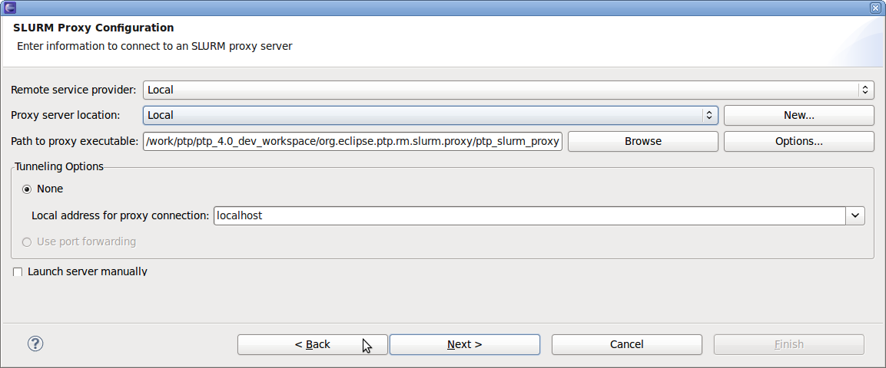
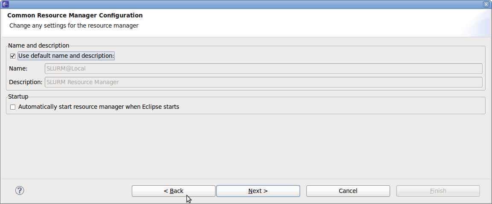

Before launching a paralle job, you should create the resource manager for SLURM. To do this, right-click in the resource managers view and selecting Add Resource Manager from the menu. A resource manager wizard will be displayed. Select SLURM from the list of resource manager types and click next. The next panel displayed configures the SLURM resource manager. Select the Remote service provider and proxy server location from the dropdown lists. You can also create a new proxy server location by clicking the New button in this pane. Specify the path to the proxy server executable, or just accept the value filled in as default from the preferences panel. In case of remote development, you should specify the ip address of the local machine (instead of localhost), to which the remote slurm proxy will connect. Uncheck the Launch server manually and click next again. On the final page of the resource configuration manager wizard, either accept the default resource manager name, or uncheck the checkbox and enter a name and description for the resource manager. Then click finish to create the resource manager entry.
The image below shows the series of SLURM proxy configuration panels of the resource manager wizard.
Configure the resource manager.
Name this occurance of the resource manager.
You may have as many resource managers defined as you require for your system configuration.